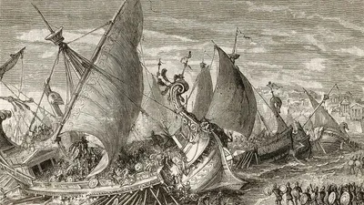

Sicilian Expedition (c. 415 - 413 BCE)

The Sicilian Expedition was a major military campaign launched by Athens during the Peloponnesian War. The Athenians wanted to expand their influence in Sicily, especially by defeating Syracuse, one of the island's strongest city-states. Syracuse received support from Sparta and Corinth, Athens' main enemies in the war. The campaign ended in a disastrous defeat that seriously weakened Athens.
From the beginning, the expedition faced several problems. What started as a relatively small mission grew into a much larger military operation because of political disagreements in Athens. Alcibiades, one of the main supporters of the campaign, was ordered to return to Athens to face accusations before the expedition had properly begun. At first, the Athenians made progress and came close to surrounding Syracuse. However, the arrival of Spartan reinforcements led by Gylippus helped the defenders organize their resistance and push back against the Athenian forces.
The situation gradually turned against Athens. Even after additional troops and ships arrived from Athens, the army suffered serious setbacks. Failed attacks and defeats at sea weakened the expedition, while the soldiers and sailors became increasingly discouraged. The Athenians eventually tried to retreat, but their escape failed. Thousands of men were killed or captured, and many survivors were forced into slavery.
The defeat had serious consequences for Athens. The city lost around 200 ships and thousands of experienced soldiers and sailors, making it much harder to continue the war. Athens' enemies became more confident, some of its allies rebelled, and Persia also became more involved in supporting the struggle against Athens. Although Athens managed to rebuild much of its navy and continued fighting for several more years, replacing the people it had lost was much more difficult.
The Sicilian Expedition is remembered as one of the greatest disasters in Athenian military history. It did not immediately end the Peloponnesian War, but it greatly reduced Athens' strength and contributed to its eventual defeat by Sparta in 404 BCE.